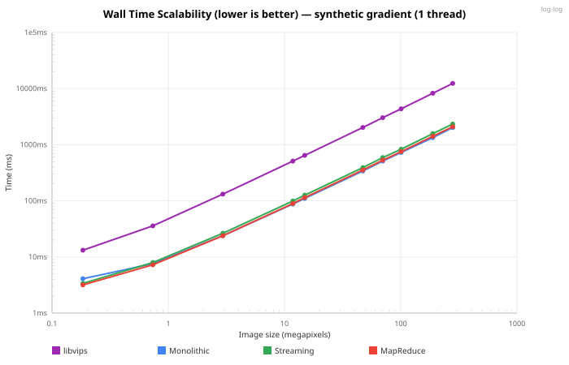
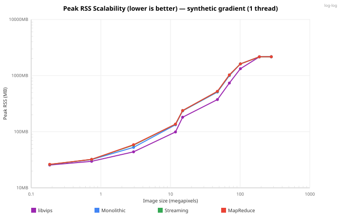
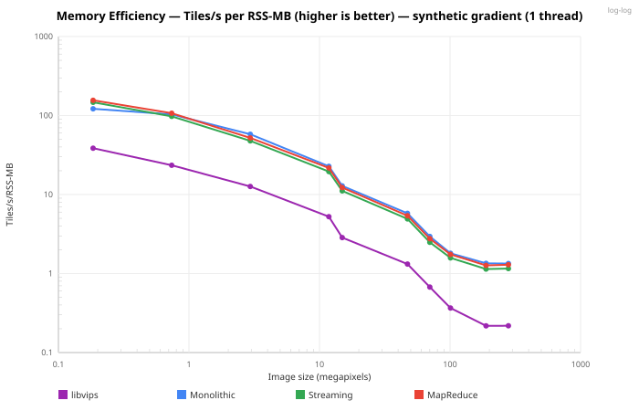
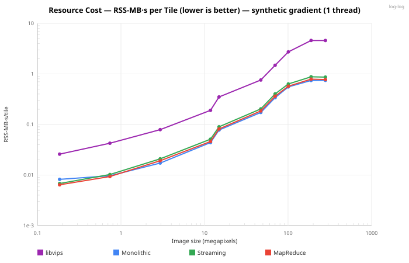
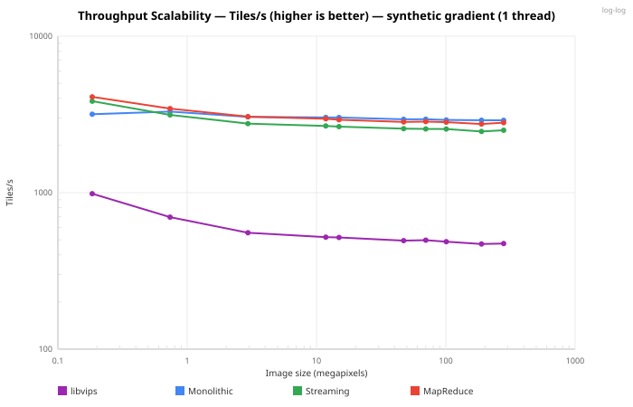

libviprs vs libvips
A pure-Rust image pyramiding library is outperforming the C heavyweight it was designed to replace. In head-to-head benchmarks on a 47-megapixel raster — the kind of large scanned document or gigapixel image that gets tiled for interactive viewing every day — libviprs generates tiles 5× to 6× faster than libvips, at process memory on par with it and an engine working set that stays flat as images grow. And this isn't a rigged comparison: both libraries receive the same raw pixel buffer in process memory, both produce DeepZoom tile pyramids with identical parameters — the kind of tiled output a WebGL map engine like MapLibre GL renders for smooth pan-and-zoom — and both are measured with the same clock, each in its own isolated process. The difference is architectural.
How We Tested
Fair benchmarking between libraries written in different languages is notoriously difficult. Shell out to a CLI and you're measuring process spawn time. Write to disk and you're measuring your SSD. To eliminate every variable except the tiling pipeline itself, we call both libraries directly through libvips-rs FFI bindings — vips_image_new_from_memory plus vips_dzsave for libvips, the native engines for libviprs — starting from an identical RGB8 pixel buffer (a synthetic gradient) already resident in memory. libvips writes raw tiles to a tmpdir (the minimum dzsave allows); libviprs writes to a MemorySink (in-memory collection). Neither side encodes to PNG or JPEG — this is pure pyramid generation throughput.
Each engine — libvips included — is measured in its own child process, so one engine's peak resident memory can never contaminate another's. That isolation is what corrected the earlier, over-optimistic memory numbers (see the Memory Wall section). Every data point is the warm median of seven timed iterations after one warm-up run, reported with a 95% confidence interval, and host load and thermal state are recorded per run. The libvips oracle is version-matched and built from pinned source inside the benchmark container (measured 8.18.4 against a pinned 8.18.4).
We tested ten image sizes from 0.2 megapixels (512×360) to 280 megapixels (20000×14000), using the aspect ratio of a real large-format scanned document (a 4608×3240 pt page). Tile size was 256×256 with no overlap — standard DeepZoom configuration. libviprs was tested across all three of its engine modes: monolithic, sequential streaming, and parallel MapReduce. The charts below report the single-thread (concurrency = 1) series — a like-for-like comparison against single-threaded libvips; MapReduce's parallel strip rendering is a separate axis that only pays off with spare cores.
The Numbers

Figure 1.Wall time vs. image size (single thread). Lower is better. libviprs engines (blue, green, red) stay below libvips (purple) at every size.
At the showcase size (8192×5760, 47 megapixels), libvips completes in 2,028 ms (Figure 1). The libviprs monolithic engine finishes in 340 ms — 6.0× faster. The streaming engine takes 390 ms (5.2×) while holding its working set to 21 MB, and the MapReduce engine lands at 354 ms (5.7×). Every libviprs engine beats libvips on wall time at every size tested, and the margin widens with scale — from roughly 3–4× on sub-megapixel images to 5–6× from the showcase size up to 280 megapixels.
| Engine | Wall time (ms) | Peak RSS (MB) | Working set (MB) | Throughput (tiles/s) | Memory efficiency (tiles/s per RSS-MB) | Resource cost (RSS-MB·s/tile) |
|---|---|---|---|---|---|---|
| libvips 8.18 | 2,028 | 374 | — | 494 | 1.3 | 0.759 |
| libviprs monolithic | 340 | 509 | 135 | 2,944 | 5.8 | 0.173 |
| libviprs streaming | 390 | 521 | 21 | 2,564 | 4.9 | 0.203 |
| libviprs MapReduce | 354 | 525 | 21 | 2,831 | 5.4 | 0.185 |
Two of those columns need reading together honestly. On peak RSS — whole-process resident memory — the three libviprs engines land close to one another and, at this size, slightly above libvips, because every engine holds the same decoded source raster. The working set column is where they separate: the monolithic engine carries 135 MB of its own live allocations, while streaming and MapReduce hold just 21 MB. That 21 MB is constant — it doesn't grow as the image gets taller — which is what lets those engines keep running where a monolithic buffer, or libvips, would not. And because libviprs turns out tiles 5–6× faster for a comparable resident footprint, all three engines still deliver roughly 4× libvips's tiles per RSS-megabyte.
The Memory Wall

Figure 2.Peak process RSS vs. image size (single thread). Every engine holds the fully-decoded source raster, so whole-process RSS is dominated by that shared cost — the four lines track within about 1.4× of each other and climb together. Process RSS is not where these engines differ; the working set is.
This is the section the previous version of this article got wrong. It headlined libviprs's memory as roughly an order of magnitude smaller than libvips's — but that compared libviprs's tracked working set against libvips's whole-process RSS, an apples-to-oranges asymmetry. v0.4.0 fixes the measurement: every engine, libvips included, is profiled for peak process RSS in its own isolated process. On that fair footing the picture is more modest and more honest. Both libraries must hold the decoded source raster in memory, so at any given size their process RSS lands in the same ballpark (Figure 2).
Measured per engine in isolation at 4096×4096, streaming and MapReduce peak at 80 MB — just under libvips at 85 MB — while the monolithic engine peaks at 127 MB, trading memory for its throughput lead. So on a like-for-like RSS basis libviprs is competitive: the streaming engines a hair leaner than libvips, monolithic a bit heavier. It is not the order-of-magnitude memory win the old numbers implied.
Where the architecture genuinely pulls away is the engine's own working set — the live allocations it manages on top of that shared source buffer. libviprs's monolithic engine materialises the full canvas and downscales level-by-level, so its working set is canvas_bytes + canvas_bytes/4 and grows with total pixels: 135 MB at 47 MP, 801 MB at 280 MP. The streaming engine instead processes the image in horizontal strips, holding only the current strip plus an accumulator chain that halves at each pyramid level — a working set of 21 MB at 47 MP that rises only to 49 MB at 280 MP, because it scales with image width, not area. MapReduce uses the same strip model with parallel rendering and the same tiny footprint.
Memory scaling from 47 MP to 280 MP (6× more pixels):
libviprs streaming / MapReduce working set: 21 MB → 49 MB (2.3× — scales with image width, not area)
libviprs monolithic working set: 135 MB → 801 MB (5.9× — scales with total pixels)
libvips process RSS: 374 MB → 2,166 MB (5.8× — scales with total pixels; libvips exposes no comparable working-set figure)
The monolithic engine has the same fundamental ceiling as any eager pipeline: its working set grows with total pixel count, and at large enough sizes it will exhaust memory just as libvips's RSS does. The streaming and MapReduce engines break that coupling by making memory a function of canvas width and a configurable strip height, which the engine maximises within a caller-set budget — so a taller image costs no more.
Efficiency Under Constraint

Figure 3.Memory efficiency — tiles/s per MB of peak RSS (single thread). Higher is better. How much tiling work each resident megabyte produces.
At 47 megapixels the libviprs engines deliver 4.9 to 5.8 tiles per second per megabyte of peak RSS; libvips delivers 1.3 (Figure 3). That's roughly 4× the memory efficiency — not because libviprs uses dramatically less memory (on RSS, it doesn't), but because it produces tiles 5–6× faster for a comparable resident footprint. The gap holds across the sweep and reaches about 6× at the largest sizes, where every engine's RSS converges on the same source-dominated ceiling and the efficiency ratio becomes the pure throughput ratio.
This matters for deployment. Cloud containers bill by memory-seconds, and because the streaming engine's working set is a constant 21 MB governed by a single budget parameter, operators can tile arbitrarily tall images inside a fixed ceiling — a 512 MB pod stays a 512 MB pod whether the image is 47 or 280 megapixels — and tune the memory/throughput tradeoff without touching application code.

Figure 4.Resource cost — MB of peak RSS × seconds, per tile (single thread). Lower is better. Memory and time in one number — what you'd pay in a billed environment.
The resource-cost chart puts a price on each tile (Figure 4). At 47 MP libvips costs 0.759 RSS-MB·s per tile; the libviprs engines cost 0.17 to 0.20 — about 4× cheaper. For a batch pipeline grinding through thousands of large documents a day, a 4× cut in the memory-time bill compounds into a materially smaller fleet.
Raw Speed Still Matters

Figure 5.Raw throughput (tiles/s), single thread. Higher is better. The monolithic engine leads; all three libviprs engines sustain several times libvips's rate.
If memory is not a constraint — you have a beefy build server with 64 GB of RAM and just want tiles as fast as possible — the monolithic engine is the clear winner at 2,944 tiles per second (Figure 5). That's 6.0× faster than libvips. The advantage comes from simplicity: the entire canvas lives in one contiguous buffer, so tile extraction is a series of memcpy calls from a flat array with no pipeline graph traversal, no region negotiation, no lock contention.
libvips's single-threaded throughput here is 494 tiles per second — respectable for a demand-driven pipeline, but its architecture carries overhead that shows up at scale. Each tile request walks a DAG of operations, allocates a region, computes the pixels for that region through the pipeline, and frees the region. That per-tile overhead is small in absolute terms but adds up across the 1,001 tiles this pyramid produces.
Identical Output, Not Cut Corners
Speed and memory numbers mean nothing if the tiles come out wrong. v0.4.0 verifies that libviprs's output is bit-for-bit identical to libvips's: spot-checking mid-pyramid tiles across the 1024-to-4096-pixel range, every comparison returns PSNR 100.0 dB and SSIM 1.0000 — the signature of pixel-exact agreement, not merely “visually close.” The wins come from a leaner architecture, not from downsampling shortcuts, lower-precision filters, or skipped tiles.
How libvips Works (And Why It's Slower Here)
To understand why a Rust library beats a mature C library, you need to understand what libvips optimises for. libvips was designed as a general-purpose image processing pipeline. Its architecture is built around VipsImage (a lazy pipeline node, not a pixel buffer), VipsRegion (a windowed view into the pipeline), and VipsOperation (a cached, reusable processing step). When you call vips_dzsave, libvips constructs a pipeline graph: load → shrink → embed → tile → save. Pixels are never computed until a downstream consumer requests a region. Multiple tiles can be processed in parallel, each pulling pixels through the pipeline via their own region.
This architecture is brilliant for composing complex image operations — you can chain dozens of operations without materialising intermediate results. But for the specific task of tile pyramid generation from a pre-decoded raster, it introduces overhead that a purpose-built engine can avoid. The pipeline graph must be traversed per-tile. Region allocation involves locking. The thread pool must coordinate. And libvips maintains internal caches and buffer pools that inflate resident memory even when the logical working set is small.
libviprs doesn't try to be a general-purpose image processing library. It does one thing: generate tile pyramids. Its Raster type is a flat Vec<u8> with known width, height, and pixel format. Tile extraction is a bounds-checked memcpy from contiguous memory. Downscaling is a hand-tuned 2×2 box filter that operates directly on the byte array. There's no pipeline graph, no region negotiation, no operation cache. The entire tiling loop fits in a single function with a straightforward control flow that the compiler can optimise aggressively.
Three Engines, One API
libviprs ships three engines behind a unified API. The monolithic engine materialises the full canvas and processes levels top-down — fastest when memory is abundant. The streaming engine processes the image in horizontal strips, keeping peak memory proportional to strip height rather than image height — best for memory-constrained containers. The MapReduce engine extends streaming with parallel strip rendering, overlapping the Map phase (render + tile) across multiple strips while the Reduce phase (downscale propagation) runs sequentially. All three produce byte-identical pyramid output.
| Scenario | Best engine | Memory complexity | Speed | Best when |
|---|---|---|---|---|
| Beefy server, max speed | Monolithic | O(canvas²) |
Fastest — 2,944 tiles/s at 47 MP | RAM is abundant and you want raw throughput. |
| Container, limited RAM | Streaming | O(width × strip) |
Good — 2,564 tiles/s in a 21 MB working set | Tight memory ceiling (e.g. 512 MB pod) on potentially huge images. |
| Multi-core, bounded RAM | MapReduce | O(width × strip) |
Fast — 2,831 tiles/s, same 21 MB working set | Spare cores you can spend on parallel strip rendering. |
| Unknown image sizes | Auto-select | Adapts to with_memory_budget |
Adapts — builder picks at runtime | Workload spans many image sizes; default for EngineKind::Auto. |
Auto-selection is built into EngineBuilder::new(...).with_engine(EngineKind::Auto) — and EngineKind::Auto is the default, so it applies even if you never call with_engine. The builder picks the engine at runtime from the source kind (in-memory raster vs. strip source) and the value passed to with_memory_budget. If the monolithic engine fits the budget for a raster source, it's used for maximum throughput. Otherwise, the streaming or MapReduce engine kicks in. No code changes, no configuration files — just a memory budget parameter.
What libvips Does Better
This benchmark measures one specific workload: generating a DeepZoom tile pyramid from a pre-decoded raster buffer. libvips is a far more capable library in the general case. It supports hundreds of image operations (colour space conversion, convolution, morphology, affine transforms, compositing), dozens of file formats, and a sophisticated caching and threading model that makes complex multi-step pipelines efficient. If you need to resize, sharpen, colour-correct, watermark, and then tile an image in a single pipeline, libvips does that with a single pass through the pixel data. libviprs does not attempt any of this.
libvips also handles source decoding lazily — it can tile a 100 GB TIFF file from disk without loading it into memory, because the decode happens per-region through the pipeline. libviprs requires the source raster to be fully decoded before tiling begins (the streaming engine reduces the working set during tiling, but the source is still in memory). For truly massive images that don't fit in RAM at all, libvips's architecture is the only option without preprocessing.
Methodology Notes
All engines call into libvips-rs FFI bindings — vips_image_new_from_memory builds a VipsImage from the same pixel buffer libviprs uses, and vips_dzsave writes raw tiles (no encoding) to a temporary directory, while libviprs engines write to a MemorySink. The key methodology change in v0.4.0: every engine, libvips included, is profiled in its own isolated child process, so peak resident memory is measured per engine with no cross-contamination. This corrects the previous methodology, which compared libviprs's internal MemoryTracker working-set figure against libvips's getrusage peak RSS — an asymmetry that made libviprs's memory look far lower than a like-for-like RSS comparison bears out. v0.4.0 now reports two clearly separated numbers: peak process RSS (the fair cross-library comparison) and each engine's own tracked working set (the constant-memory story). Every timing is the warm median of seven iterations after a warm-up, with a 95% confidence interval; host load (~2.6 on the run behind these figures) and thermal state are recorded alongside. The libvips oracle is version-matched — measured 8.18.4 against a pinned 8.18.4 — and built from source in the benchmark container.
Source code for all benchmarks is in libviprs-bench/src/scalability.rs. The benchmark can be reproduced in Docker via ./run-bench.sh, which builds a container with libvips-dev, libpdfium, and libviprs from source.
What Changed Since v0.3
Against the prior v0.3.x snapshots, v0.4.0 shows no performance regressions: wall time is 45–48% lower on every shared workload. Read that as “nothing got slower,” not as a 47% code speedup — the drop also reflects the methodology change from single cold runs to warm medians of seven iterations, measured on a different, loaded host. Two other things improved. Full engine coverage is restored at large sizes: streaming and MapReduce previously dropped out at and above 1024 pixels under a too-small internal budget, and now run clean across the whole sweep. And memory is now measured per-engine in isolation, which — as the Memory Wall section describes — conservatively corrects the earlier, over-optimistic figures downward. The honest read of v0.4.0 is a faster, better-instrumented, and more truthful benchmark, not a set of new records to trumpet.
Conclusion
libviprs is not a replacement for libvips. It's a specialised tool that does one job — tile pyramid generation — and does it several times faster, with tighter and more predictable memory, than the general-purpose library it draws inspiration from. At 47 megapixels the monolithic engine produces tiles 6.0× faster than libvips; the streaming and MapReduce engines stay within 5–6× on speed while holding a constant 21 MB working set that decouples memory from image size — and every tile they emit is bit-identical to libvips's output.
For teams tiling thousands of large scans, gigapixel images, and multi-page PDFs daily in containerised pipelines — feeding the tiled pyramids to a MapLibre GL viewer or any other Deep Zoom / XYZ client — that combination translates to fewer machines, smaller pods, and faster turnaround. libviprs brings the Rust performance story to a workload that has relied on C for decades — and the benchmarks, measured honestly, show it was worth the rewrite.